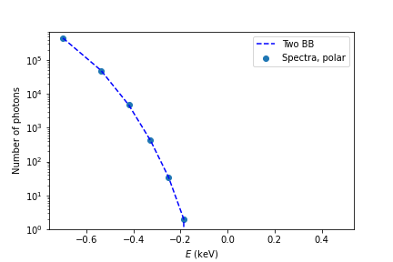

Fitting X-ray lightcurve with blackbody model¶
In this example we fit a spectra produced by neutron
star with a blackbody. We import both atmos and
magpies, define neutron star radius and mass, its
deep crust temperature and polar magnetic field.
from magpies import *
from atmos import *
import numpy as np
from math import *
import matplotlib.pyplot as plt
## Radius and mass of neutron star
Rns = 12 ## km
Mns = 1.4 ## M_solar
Tb = pow(10, 7.1730) ## K
Bp = 1e11 ## G
g14c = g14 (Rns, Mns) ## computing the free fall acceleration
Then we create an array with energies probed by an X-ray telescope. In this example we assume the energy range from 200 eV to 3 keV with energy resoltuion 85 eV. We also fix the total number of received photons.
## Instrument and exposure
eph = np.linspace (0.20, 3.00, 32) ## Nicer soft X-ray range
nphot = 5e5
Here we create a thermal map using numerical fit for iron surface composition
from article 1 implemented in atmos package.
atm_iron_2003 = NS_atmosphere ('Potekhin_2003_iron', g14c, Tb, Bp)
Tm = Tmap (usage='NS_atm', ns_atm=atm_iron_2003)
Tm.plot_Ts(filename='surface_temperature_72_14.png')
We produce the spectra of neutron star if it is visible from equatorial direction.
For this we use the method magpies.spectra_pole:
sp_red, map_of_visible = spectra_pole (Tm, Rns, Mns, eph)
sp_red_n = flux_to_photons (sp_red, eph, nphot) ## convert to photons
Teff = compute_Teff (theta, phi, Rns, Ts)
In order to fit blackbody model we use method magpies.fit_spectral_model_Cstat. This method
returns an array with 6 elements. First 4 elements are s1, s2, p1, p2. The parameters s1 and s2
are relative surface areas of the first and second hot spots. The parameters p1 and p2
are the relative temperatures of the first and second hot spots. The absolute values
of temperature can be found as \(T_1 = p_1 T_\mathrm{eff}\). The remaining two parameters
are values of C-statistics computed for single blackbody and for sum of two blackbody models.
In the case when the single blackbody model is better then sum of two blackbodies p1=p2 and
s1=s2. The total emitting area is computed as a sum of two areas in this case s=s1+s2.
bb2_opt_par = fit_spectral_model_Cstat (Teff, Rns, Mns, sp_red_n_eq, eph, nphot, L)
print (bb2_opt_par)
In order to visually check if the fit is succesful, it is possible to compute the model spectra
using magpies.examine_spectral_fit_2BB_photons:
bb2_opt = examine_spectral_fit_2BB_photons (bb2_opt_par[0:4], Teff, Rns, Mns, eph, nphot, L)
plt.scatter (np.log10(eph), sp_red_n_eq, label='Spectra, polar')
plt.plot (np.log10(eph), bb2_opt, 'b--', label='Two BB')
plt.xlabel(r'$E$ (keV)')
plt.ylabel('Number of photons')
plt.yscale('log')
plt.ylim([1, 7e5])
plt.legend()
We show the result below. The coincidence between model and synthetic spectra is remarkable.
- 1
Potekhin, Yakovlev, Chabrier & Gnedin (2003), ApJ, 594, 1, 404, https://ui.adsabs.harvard.edu/abs/2003ApJ…594..404P/abstract